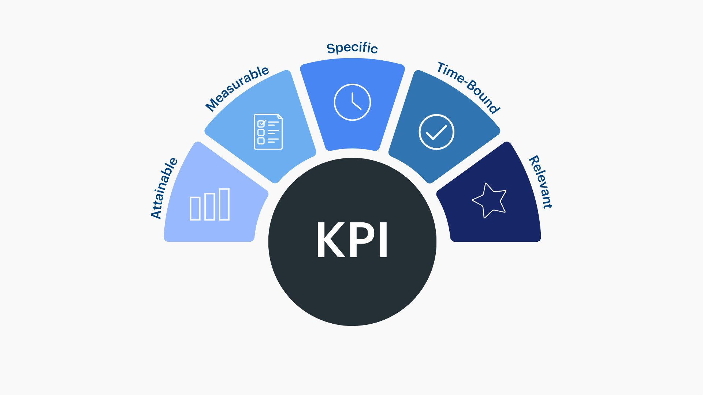

Analyse, Reporting & Datavisualisation — Scraping Intermarché

🔍 AgrandirCadre du projet & Objectifs
SAÉ transversale : scraping du catalogue Intermarché, nettoyage intensif des données (doublons, formats, valeurs manquantes), puis production d'un dashboard décisionnel.
Étapes de réalisation
Scraping du catalogue
Extraction massive des données produits : noms, prix, catégories, promotions. Gestion des structures HTML variables.
Nettoyage & structuration
Doublons, normalisation des prix, valeurs manquantes, enrichissement par catégories produits.
Dashboard décisionnel
Répartition des prix par catégorie, promotions actives, produits les plus représentés — avec filtres interactifs.
Ce que j'en retire
La réalité des données web
Les données scrapées ne sont jamais propres. Le nettoyage a représenté plus de 60% du temps total — la réalité du terrain en Data Engineering.
💡 Ce que j'ai retenu
Construire le pipeline de nettoyage en parallèle de la collecte est bien plus efficace que de tout nettoyer à la fin.
Positionnement par rapport aux ACs
| Apprentissage Critique | Statut | Commentaires |
|---|---|---|
| AC2.1.03 Identifier et résoudre les problèmes d'intégration de sources hétérogènes |
P | Gestion des structures HTML variables — résolution progressive des cas particuliers mais quelques produits restaient mal structurés. |
| AC13.05 Comprendre les intérêts de la data visualisation et de l'infographie |
A | Dashboard lisible et pertinent, chaque visuel répond à une question concrète sur la structure du catalogue. |
| AC2.1.04 Comprendre la nécessité de tester, corriger et documenter un programme |
P | Code organisé en fonctions, mais documentation et tests auraient pu être plus systématiques. |